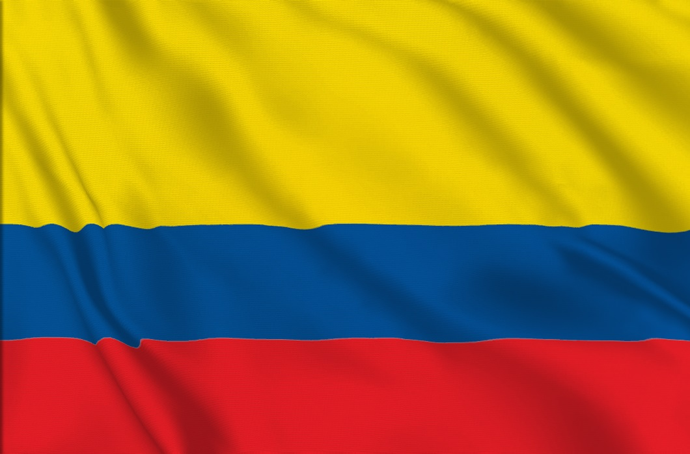

Colombia
Colombia es un país ubicado en la parte noroccidental de América del Sur. Es conocido por sus diversos paisajes, que van desde la cordillera de los Andes hasta las costas del Pacífico y el Caribe. Colombia también es famosa por su rica biodiversidad, con un gran número de especies de plantas y animales. Es el único país de América del Sur con costas en el Océano Pacífico y el Mar Caribe. La cultura de Colombia es una mezcla de influencias indígenas, africanas y europeas, lo que se refleja en su música, arte y gastronomía. La capital del país, Bogotá, es conocida por sus monumentos de la época colonial y también es una de las capitales más altas del mundo. Otras ciudades importantes incluyen Medellín, Cali y Barranquilla. El idioma oficial de Colombia es el español, y la mayoría de la población practica el cristianismo, principalmente el catolicismo romano. La economía del país es diversa, con sectores clave que incluyen la agricultura, la minería, la manufactura y los servicios. Colombia es particularmente famosa por su producción de café y esmeraldas.